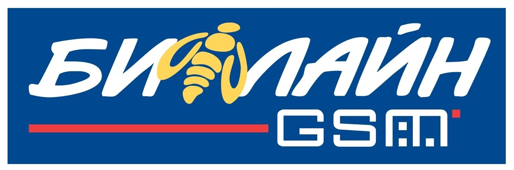

| Логотип до 2005 года |  |
|||||
| Логотип до 2021 года | ||||||
| Актуальный логотип | ||||||
|
В 2021 году компания билайн провела масштабный ребрендинг и в очередной раз сменила слоган. Он стал звучать как «На твоей стороне». А название бренда начали писать со строчной буквы. Изменения объяснили заботой о клиентах: абонентам так проще и удобнее. Этот же период ознаменован строительством более 3 тысяч новых станций. Нагрузки на сеть постоянно возрастают, поэтому необходимо обеспечить пользователям максимально стабильный сигнал и высокую скорость мобильного интернета. К концу 2021 года абонентская база билайн составила 50,8 млн человек. Последние годы билайн уделяет особое внимание работе с социальными и благотворительными проектами. Среди самых известных инициатив: тариф «Социальный пакет» для наименее защищенных категорий населения, а также сотрудничество с с поисково-спасательным отрядом «ЛизаАлерт» и инклюзивным проектом Evarland. В конце 2022 года холдинг VEON, которому сейчас принадлежит «ВымпелКом», сообщил о том, что ищет покупателя на российскую часть бизнеса. Но в пресс-службе заявили, что, независимо, от результата сделки, принципы работы останутся прежними. В центре бизнеса так же, как и раньше, будут «клиенты и непрерывный качественный сервис». |